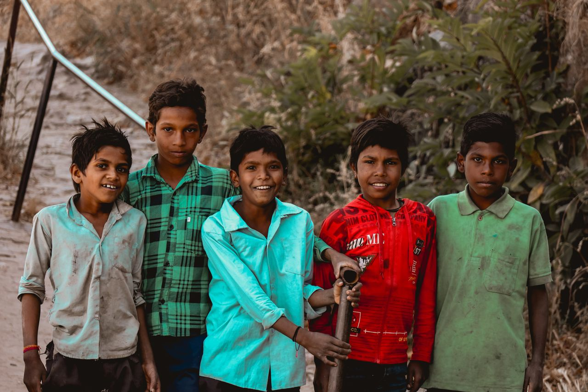

A humanitarian initiative for India's special children
Jwalin Charitable Trust is dedicated to supporting children affected by Cerebral Palsy, developmental disabilities and mental disorders — with awareness, compassion, and practical help for the whole family.
Who we are
Jwalin Charitable Trust is a humanitarian initiative dedicated to supporting children affected by Cerebral Palsy, developmental disabilities and mental disorders in India. Our mission is to create awareness, improve access to therapy and support systems, and empower families with knowledge, compassion and hope.
We understand that families caring for special children face emotional, financial and social challenges. Through our programs and community efforts, we aim to reduce these burdens and help every child receive the care and opportunities they deserve.

Our mission
To support children with Cerebral Palsy and developmental disorders through awareness, therapy assistance, education, rehabilitation and compassionate community care.
Our vision
To build an inclusive society where every special child receives dignity, equal opportunity, healthcare support, and the chance to thrive.
Why we started
“Every child, regardless of their challenges, deserves the chance to live with dignity and reach their fullest potential.”
This space is for the founder's message — the personal story and conviction behind Jwalin Charitable Trust. Share what inspired the trust, the families who shaped its purpose, and the change you hope to create for special children across India.
Replace this with the founder's own words and signature.
Why this website matters
More than a website — a growing support ecosystem for families.
A trusted knowledge center
Clear, reliable information for parents seeking answers.
A support platform
Guidance and encouragement for families at every stage.
An awareness movement
Spreading understanding of CP and early intervention.
A rehabilitation resource
Practical therapy and care guidance families can use.
A fundraising platform
Channeling support directly to children who need it.
A long-term community
Building lasting relationships with families and partners.
Join us in supporting special children
Whether through a donation, your time, or a partnership — your support helps a child move closer to a life of dignity and hope.